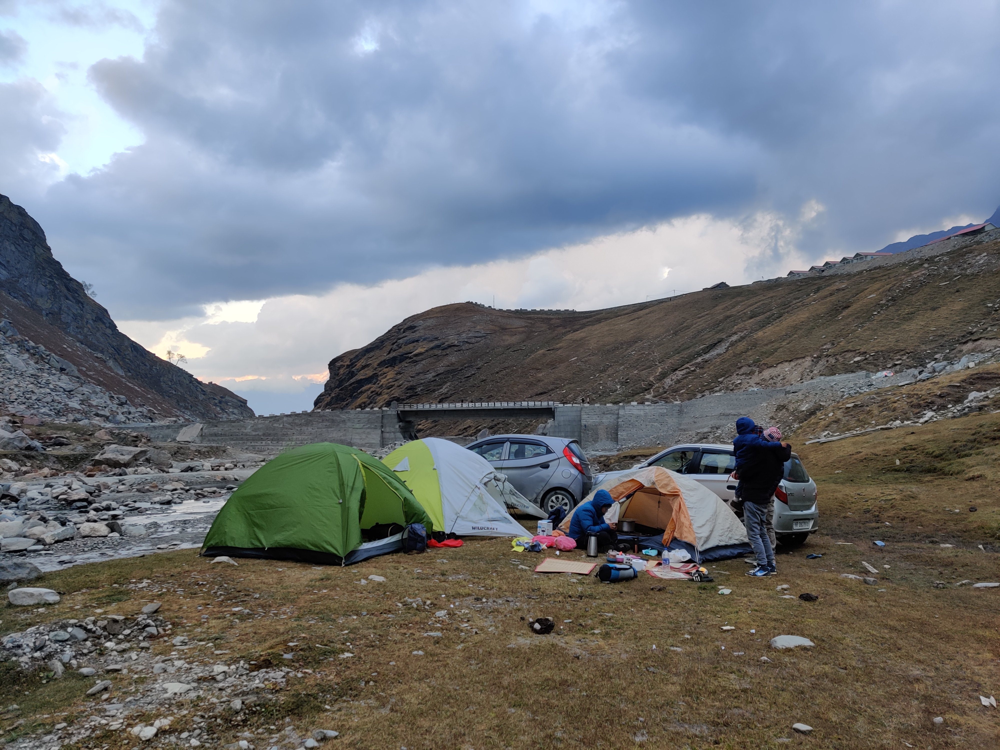

Travelling



I like Travelling, But only with friends or colleague.
Rohtang Pass (Rohtang , lit: རོ་ (Ro)- corpse(s), ཐང་། (thang)- plain/field [1]) is a high mountain pass (elevation 3,980 m (13,058 ft)) on the eastern end of the Pir Panjal Range of the Himalayas around 51 km (32 mi) from Manali in the Indian state of Himachal Pradesh.[2][3][4][5] It connects the Kullu Valley with the Lahaul and Spiti Valleys of Himachal Pradesh, India.
Geography
The pass provides a natural divide between the Kullu Valley with a primarily sanatani culture (in the south), and the arid high-altitude Lahaul and Spiti valleys with a Buddhist culture (in the north). The pass lies on the watershed between the Chenab and Beas basins. On the southern side of this pass, the Beas River emerges from underground and flows southward[6] and on its northern side, the Chandra River (flows from the eastern Himalayas),
a source stream of the river Chenab, flows westward.